Concepto
El cerdito Miguel tiene un carrito donde vende tortas, pero sus clientes tienen gustos bastante peculiares. Con el paso del tiempo, su carrito se vuelve cada vez más popular: visita nuevas ciudades, llegan más y más clientes, y Miguel empieza a incorporar nuevas tortas e ingredientes. Ahora, Miguel tiene que atenderlos a todos rápidamente y mantenerlos contentos, mientras trata de no desperdiciar comida y maximizar sus ganancias.
🛠️ Noticias de Desarrollo
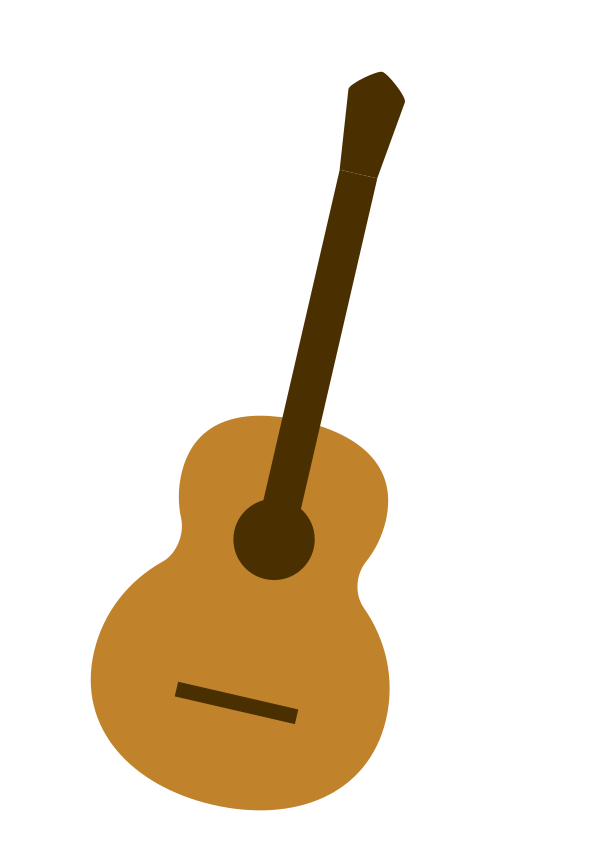
29 de marzo de 2025 — Creación de la armonía para el tema principal del juego.
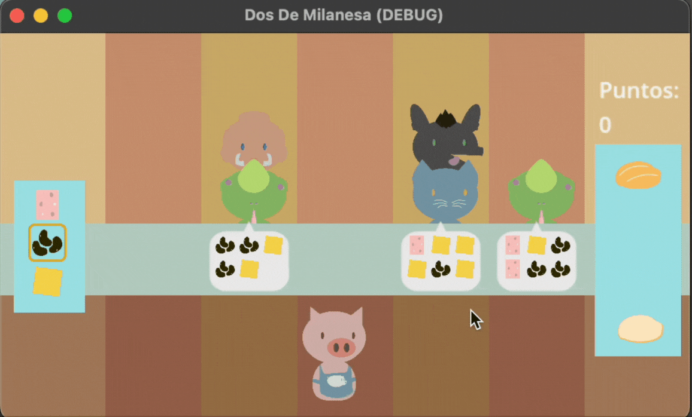
28 de marzo de 2025 — Se añadieron los personajes camaleón, perrito y mamut.
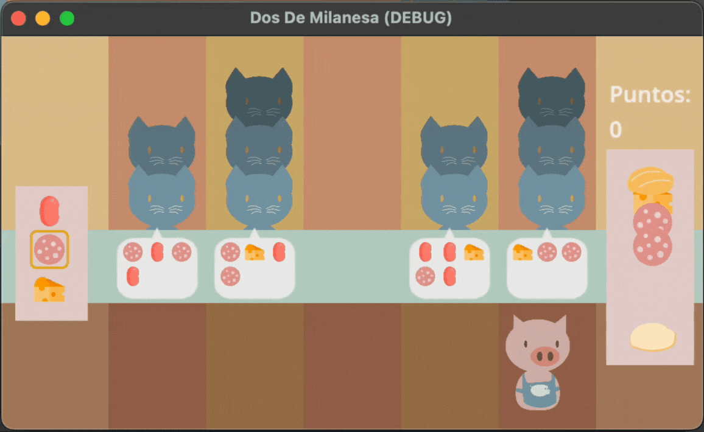
28 de marzo de 2025 — Se implemento el sistema de las ordenes de los clientes y el sistema de puntaje si la orden fue correcta (+1 punto) o incorrecta (-1).
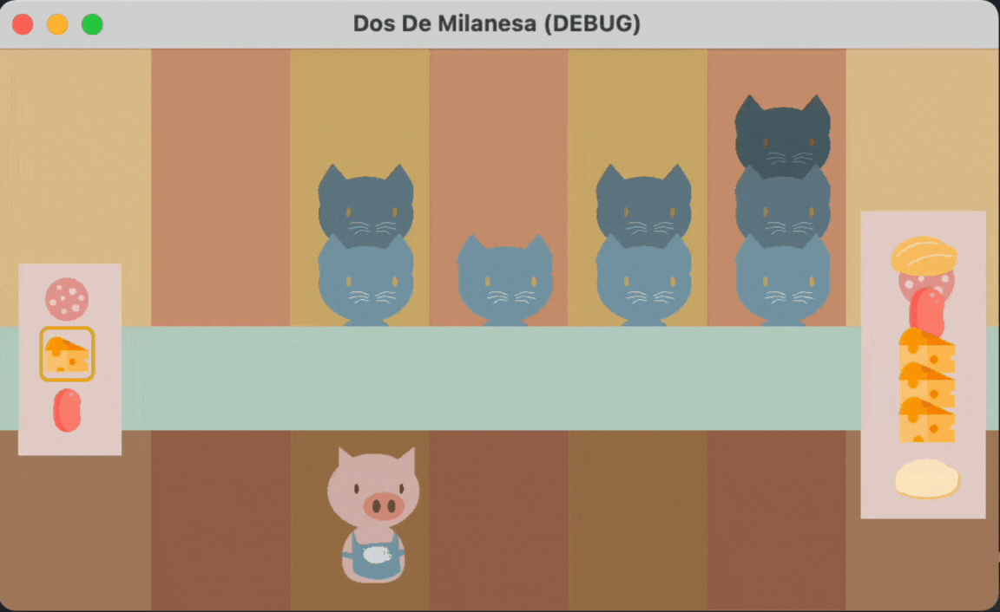
27 de marzo de 2025 — Se diseñó del pan para constuir la torta con los ingredientes.
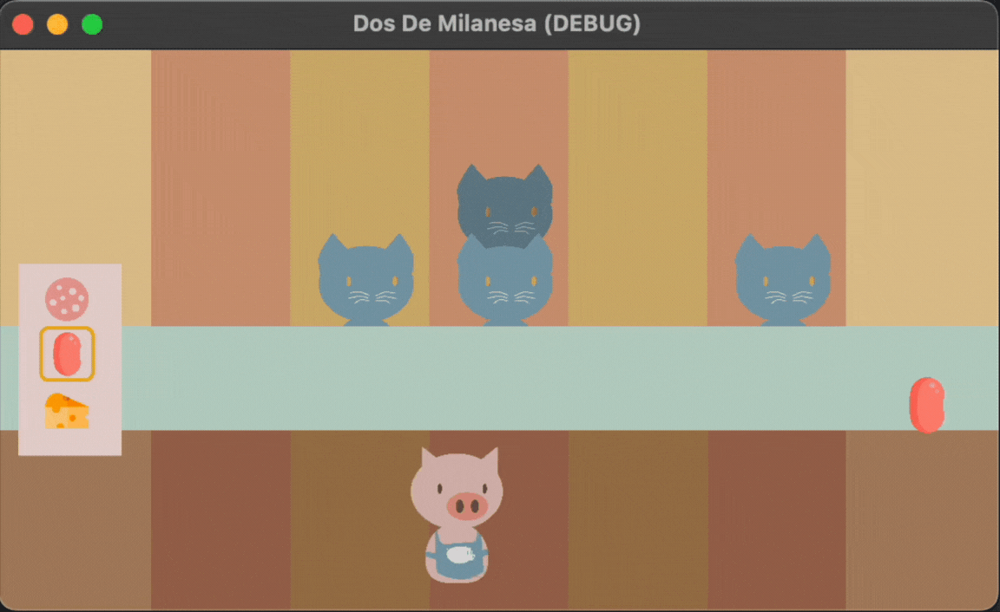
27 de marzo de 2025 — Se diseñó el sistema de seleccion de ingredientes para la torta.
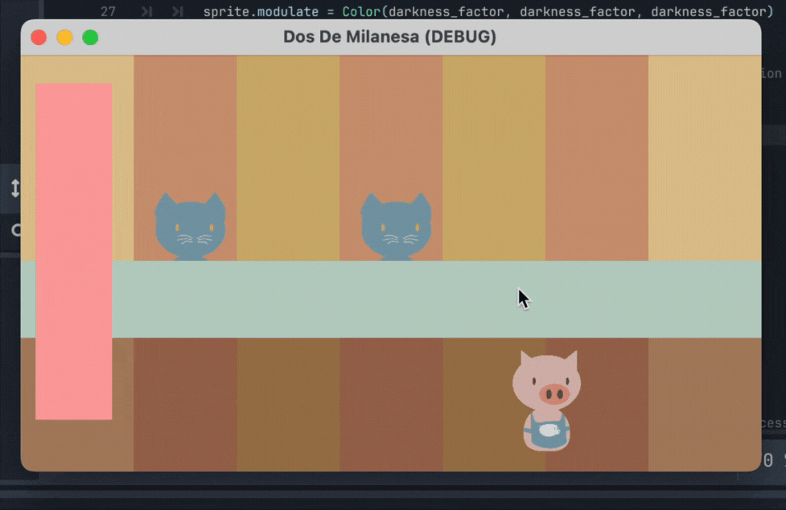
26 de marzo de 2025 — Se diseñó el primer cliente (el gato) y se implementó el sistema para hacer que los clientes aparezcan y desaparezcan del escenario.
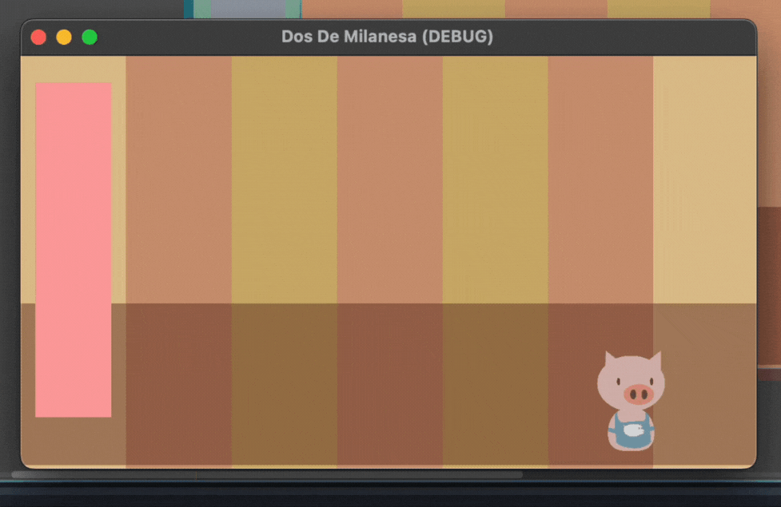
25 de marzo de 2025 — Se agregaron los carriles por los que llegan los clientes y el área donde se muestran y seleccionan los ingredientes para preparar las tortas.

24 de marzo de 2025 — Diseño de Miguel, el personaje principal del juego, e integración inicial en el entorno del demo. Actualmente, Miguel puede ser controlado por el jugador y moverse de lado a lado dentro del escenario.
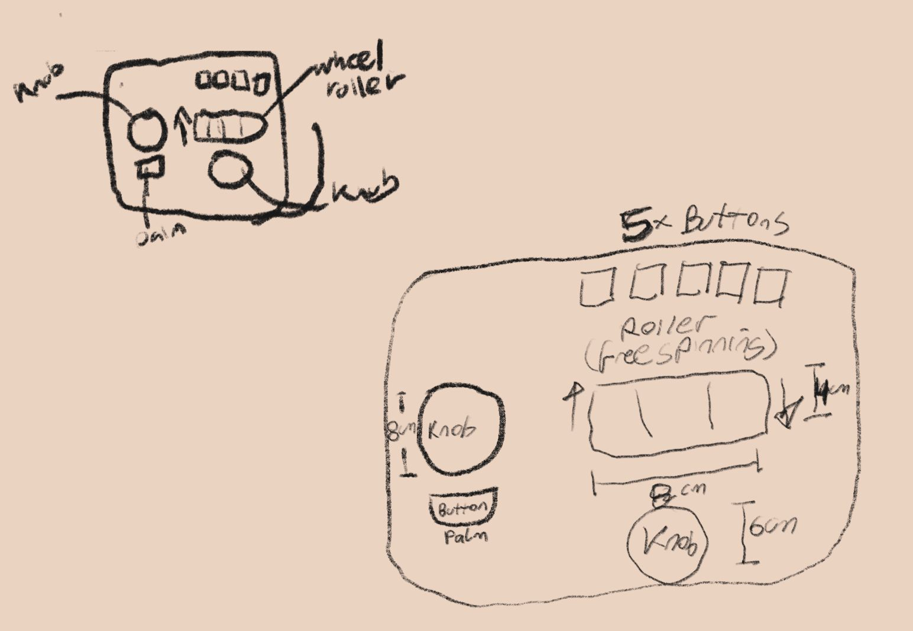
22 marzo 2025 — Primer boceto de el control del videojuego: perillas, rodillo y botones dedicados a ingredientes especiales. Este concepto está inspirado en los controles clásicos de juegos arcade.

22 marzo 2025 — Primer boceto visual del concepto del juego. Incluye ideas iniciales de personajes, sistema de puntaje y propuestas para las habilidades especiales de cada uno.
Controles
Usa la perilla izquierda para desplazarte por los ingredientes y el botón que está debajo para seleccionarlos. Una vez que armes la torta, usa la perilla derecha para moverte por la barra hasta llegar al carril correcto con el cliente adecuado. Luego, usa el rodillo grande que está encima de la perilla y deslízalo hacia arriba para entregar la torta (también puedes tirarla a la basura si lo deslizas hacia abajo). Además, puedes agregar salsas e ingredientes especiales presionando los botones que están encima del rodillo.
Personajes
Miguel
 Miguel
Miguel
A Miguel le encanta cocinar y descubrir nuevas recetas. Está orgulloso de poder identificar qué le gusta a sus clientes para mantenerlos felices. Disfruta experimentar con ingredientes y sorprenderlos con combinaciones inesperadas y deliciosas. Si hay muchos clientes esperando, se estresa y empieza a moverse más rápido… se pone histérico.
Clientes
 Gatitos
Gatitos
Son impacientes. Gritan si tardas, y Miguel no puede escuchar a los demás. 🐱
 Perritos
Perritos
Muy emocionados por probar tortas. Si se tarda mucho, cambian su orden. 🐾
 Camaleones
Camaleones
Son tímidos y se disfrazan de otros clientes, pero sus ojos los delatan. Si les das el ingrediente especial equivocado, rechazan la orden. 🦎
 Mamut
Mamut
Amables, pero con memoria perfecta. Piden órdenes grandes, pero si reciben la orden equivocada, no lo olvidan y restan más puntos. 🐘
Obstáculos
 Tlacuaches
Tlacuaches
Obstáculo que aparece en la barra y roba ingredientes. Si la torta tiene el ingrediente favorito del cliente, se espanta.
Ingredientes
Base
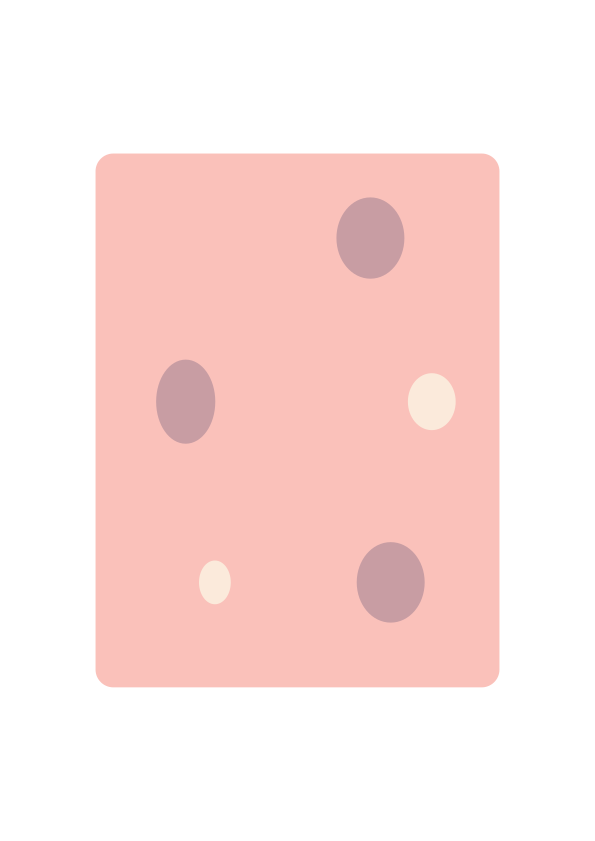
Jamón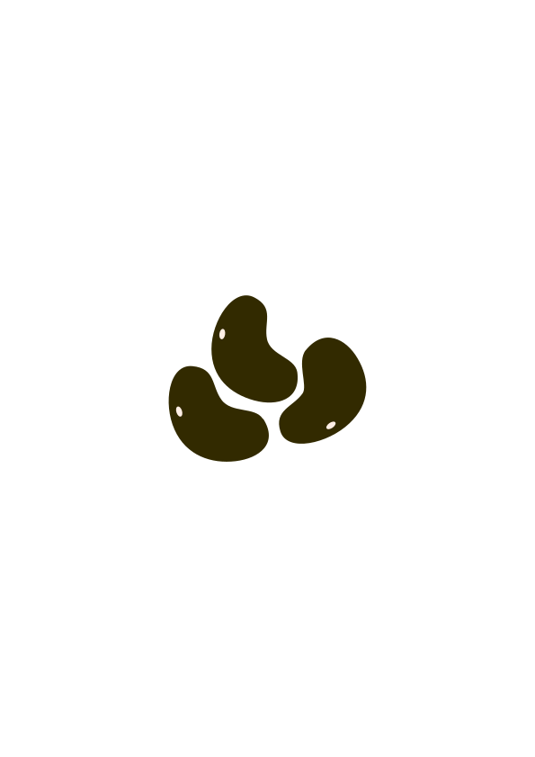
Frijoles negrosComplementos
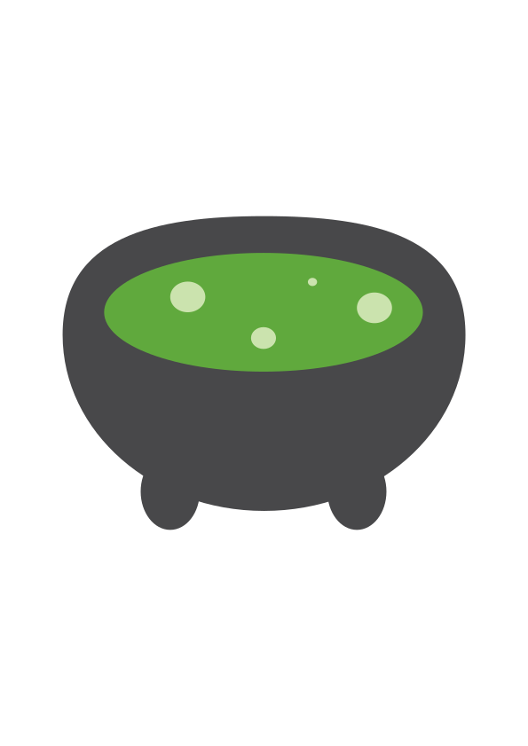
Salsa verde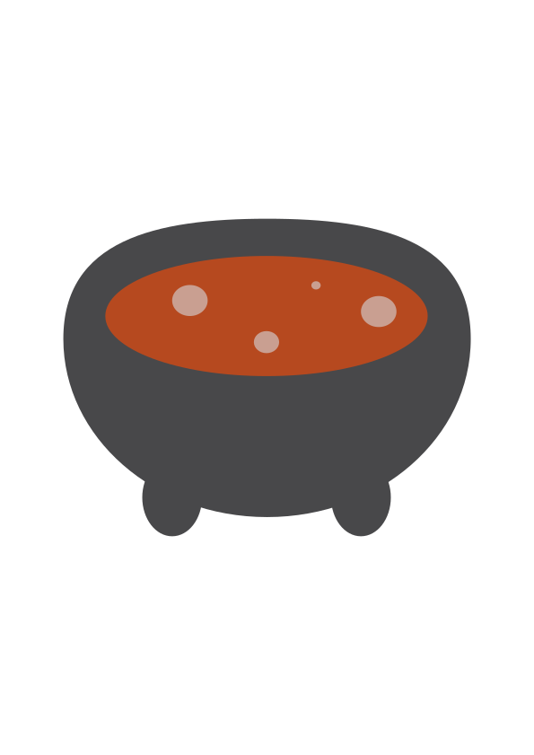
Salsa roja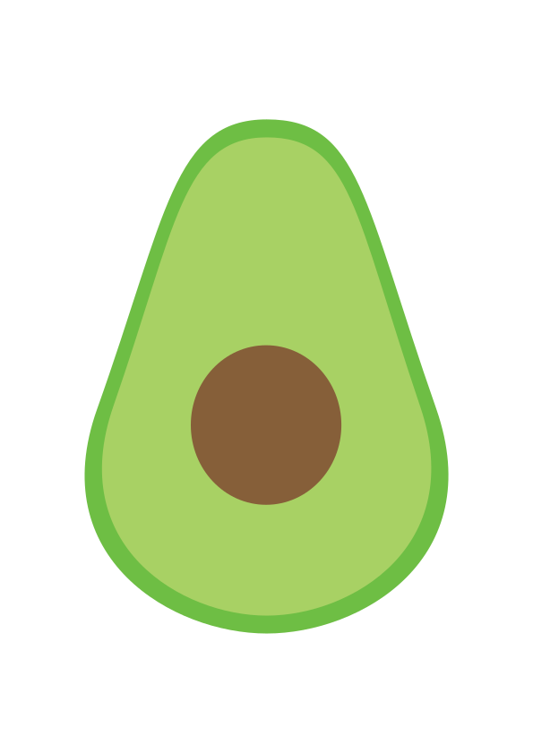
Aguacate
Crema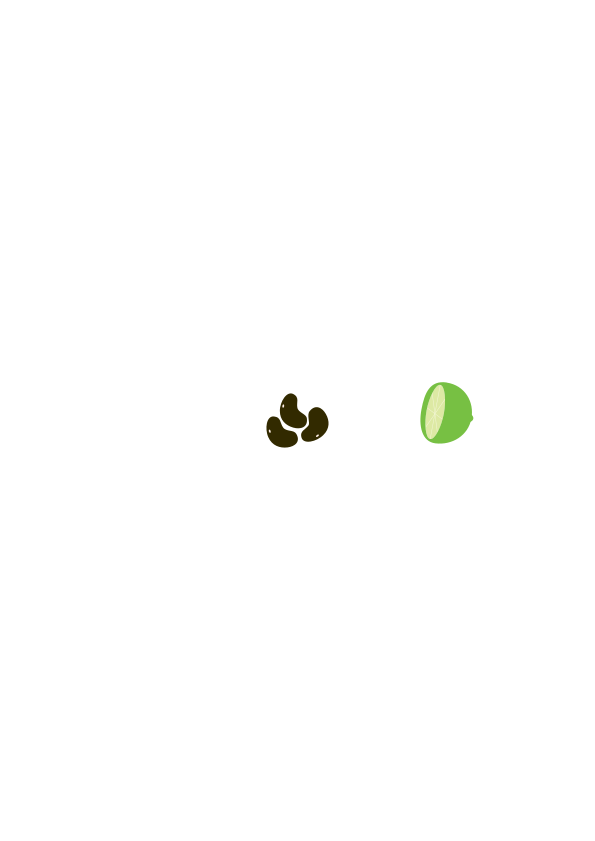
LimónEquipo
- Gem Alvarez Perez — Director, Programador Principal, Artista Principal, Co-creador.
- Toledano — Diseñador de Sonido y Compositor Musical.
- Adriana Rubio Segura — Diseñadora de Hardware, Prototipado de Interfaces Físicas.
- Arturo de la Cruz — Diseñador de Hardware, Prototipado Electrónico e Interfaces.
- Hideki Garcia Goo — Productor Creativo, Co-creador, Desarrollador Web, Diseñador Visual.